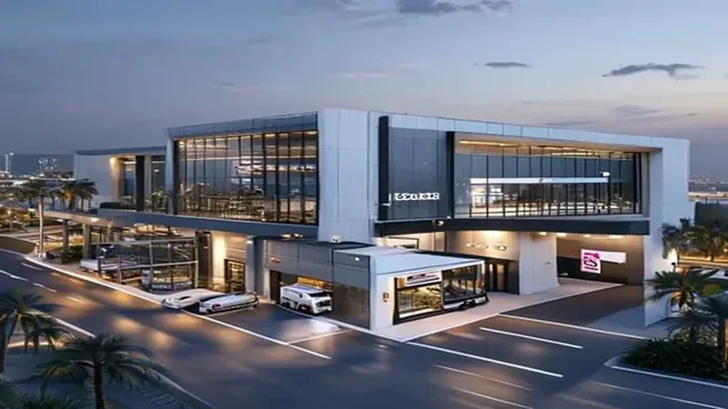
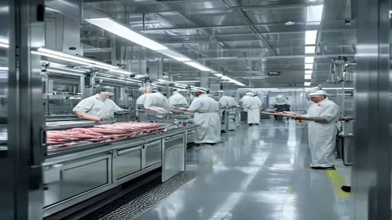
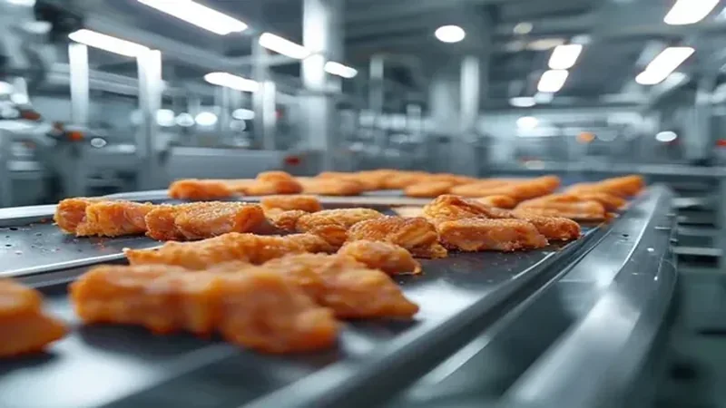
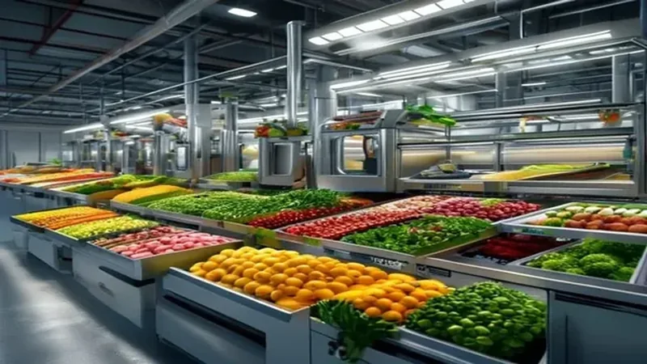
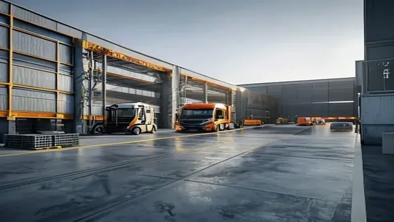
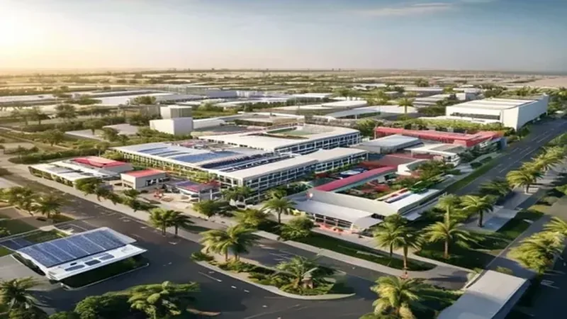

دراسة جدوى مصنع تجهيز اللحوم المستوردة من كينيا
تجهيز وتقطيع وتغليف — جدة، المملكة العربية السعودية
جدول المحتويات
- مصادر البيانات ومنهجية الافتراضات
- الملخص التنفيذي
- تعريف المشروع والرؤية
- تحليل SWOT
- دراسة السوق في جدة
- المنتجات وخطة الإنتاج
- الموقع: داخل المدينة الصناعية vs خارجه
- الدراسة الفنية والمعدات
- معرض تصورات المشروع
- سلسلة التوريد والاستيراد من كينيا
- التراخيص والاشتراطات
- الهيكل التنظيمي والعمالة
- الدراسة المالية والجدوى
- التحليل المالي التفصيلي والحساسية
- تحليل المخاطر
- خطة التنفيذ والتوسع
مصادر البيانات ومنهجية الافتراضات
تم بناء هذه الدراسة على مزيج من مصادر رسمية وأسواق مفتوحة، مع الإشارة الصريحة إلى كل ما هو افتراضي وما يحتاج إلى توثيق من مصادر أولية.
مصادر موثوقة تم الاعتماد عليها
- اللحوم الكينية والأسعار العالمية: مؤشر IndexBox يُظهر أن متوسط سعر تصدير لحم الضأن والماعز من كينيا بلغ 4,440 دولار/طن FOB عام 2022، وأن كينيا صدّرت 2.9 ألف طن من لحم الضأن/الماعز إلى السعودية. [IndexBox — Kenya sheep/goat meat]
- أسعار اللحوم في كينيا (تجزئة/جملة): Kenya Meat Processors تُعلن قائمة أسعار 2026: لحم بقري عظم 850 ر.ش/كجم، فيليه 1,350 ر.ش/كجم، لحم ضأن 940 ر.ش/كجم. سعر الصرف: 1 ر.ش كيني ≈ 0.029 ر.س (أغسطس 2025). [KMP Price List] [KES/SAR rate]
- المنشآت الكينية المعتمدة لدى SFDA: الهيئة العامة للغذاء والدواء تنشر قائمة منشآت معتمدة لتصدير لحوم الأغنام ومنتجاتها من كينيا، منها Quality Meat Packers Ltd. وNeema Livestock & Ken Meat (EPZ) Ltd. [SFDA — Kenya approved establishments]
- التعرفة الجمركية: وزارة التجارة الأمريكية تشير إلى أن الواردات السعودية من اللحوم الحمراء الطازجة تدخل برسم جمركي 0%، بينما تخضع معظم الأغذية لـ 5%، والسلع المعالجة قد تصل إلى 40%. [trade.gov — Saudi import tariffs]
- الضريبة والتخليص: ضريبة القيمة المضافة 15% على قيمة البضاعة + الرسم الجمركي؛ التخليص الجمركي يتم عبر منصة Fasah ويشترك SFDA في فحص الأغذية. [VAT 15%] [Customs clearance 2025]
- المدن الصناعية (MODON): أراضٍ صناعية مؤجرة بـ 1–4 ر.س/م² سنوياً، ومصانع جاهزة بـ 60–100 ر.س/م² سنوياً. [Raghdan — MODON guide]
- إيجارات المستودعات في جدة: غرفة جدة — مدينة المستودعات تبدأ من ~120 ر.س/م² سنوياً؛ السوق الخاص 150–270 ر.س/م² سنوياً حسب التجهيزات. [JCCI] [Aqar.fm]
- معرض Foodex Saudi: يُعدّ من أكبر معارض الأغذية في المملكة؛ المطاعم والمقاهي ~12%، الفنادق والضيافة ~13%، خدمات الإعاشة ~10%، التجزئة ~8% من الزوار. [Foodex Saudi]
افتراضات الدراسة
- المصنع يستورد لحوماً حمراء نيئة/مبردة من كينيا (أبقار، ضأن، ماعز) ويجري تقطيعها وتجهيزها ومنتجات نصف مصنعة.
- حجم المصنع الأولي ~1,000 م² (ليس كبيراً جداً) في موقع صناعي خارج المدن الصناعية أو في مدينة صناعية صغيرة.
- الرسوم الجمركية على اللحوم الحمراء الطازجة 0% (مع احتمال 5–15% على بعض القطع المجمدة/المعالجة) والضريبة 15% (قابلة للاسترداد للمنشأة المسجلة).
- تكلفة الشحن + التخليص + النقل الداخلي مُقدّرة بـ 1.5–2.5 ر.س/كجم.
الملخص التنفيذي
المشروع: مصنع صغير في جدة لتجهيز اللحوم المستوردة من كينيا (أبقار، ضأن، ماعز) إلى قطع طازجة ومنتجات نصف مصنعة.
المرحلة الأولى: منشأة بمساحة ~1,000 م²، طاقة يومية متوسطة، تخدم المطاعم والفنادق وشركات الإعاشة ومحلات اللحوم.
العملاء: مطاعم برجر وشاورما، فنادق، شركات إعاشة، متاجر لحوم، مطابخ سحابية.
الاستثمار المتوقع: 4,300,000 ر.س.
فترة الاسترداد المتوقعة: 38–45 شهراً عند التشغيل بالطاقة المتوسطة.
أبرز المؤشرات المالية (تقديرية)
* الأرقام أعلاه افتراضية وتعتمد على التفاصيل المالية في الفصل 12. يمكن تعديلها عبر حاسبة الجدوى المالية.
تعريف المشروع والرؤية
الرؤية
أن نصبح مصدراً موثوقاً للحوم الطازجة والمنتجات النصف مصنعة في منطقة مكة المكرمة، من خلال استيراد لحوم حلال عالية الجودة من كينيا وتجهيزها وفق أعلى معايير السلامة الغذائية.
الرسالة
توفير لحوم أبقار وضأن وماعز طازجة ومقطعة ومُجهزة للمطاعم والفنادق ومحلات اللحوم، بجودة ثابتة وتسليم في الوقت المحدد.
الأهداف الاستراتيجية للمرحلة الأولى
- إنشاء مصنع صغير متخصص بمساحة ~1,000 م².
- توقيع عقود توريد مع 15–25 مطعماً/فندقاً في السنة الأولى.
- تحقيق تشغيل مستقر بمعدل استغلال 55–65% من الطاقة الإنتاجية.
- بناء علاقة مستدامة مع موردين كينيين معتمدين من SFDA.
- الوصول إلى نقطة التعادل خلال 30–40 شهراً.
نقاط التميز التنافسية
منشأ كيني مميز
استغلال أسعار اللحوم الكينية التنافسية وسمعتها بين المستهلكين الخليجيين.
جودة وحلال
اعتماد منشآت كينية معتمدة من SFDA وشهادات ذبح حلال معتمدة.
مرونة في التقطيع
إمكانية تلبية أوزان وأحجام مختلفة حسب طلب المطاعم والفنادق.
سلسلة تبريد مكتملة
غرف تبريد وتجميد وسيارات مبردة لضمان سلامة المنتج.
تحليل SWOT
نقاط القوة (Strengths)
موقع جدة الاستراتيجي قرب الميناء، منتجات متخصصة، فريق صغير فعّال، قرب من عملاء B2B.
نقاط الضعف (Weaknesses)
اعتماد على استيراد من كينيا وتقلبات الأسعار، رأس مال أولي محدود، حاجة لبناء علامة تجارية.
الفرص (Opportunities)
نمو قطاع المطاعم، طلب على اللحوم الحمراء الطازجة، إمكانية التوسع إلى منتجات مغلفة.
التهديدات (Threats)
تقلبات أسعار الصرف والشحن، منافسة من اللحوم المحلية والبرازيلية/الأسترالية، تغييرات تنظيمية.
دراسة السوق في جدة
لماذا جدة؟
سوق كبير
آلاف المطاعم والفنادق وشركات الإعاشة في جدة وضواحيها.
بوابة استيراد
ميناء جدة الإسلامي يستقبل شحنات اللحوم من كينيا والهند وباكستان وأستراليا.
توزيع إقليمي
إمكانية التوزيع إلى مكة والطائف وينبع والمدينة.
طلب على اللحوم الحمراء
المطاعم التقليدية والفنادق تستهلك كميات كبيرة من الضأن والماعز واللحم البقري.
تحليل المنافسة
| نوع المنافس | نقاط القوة | نقاط الضعف | فرصتنا |
|---|---|---|---|
| مصانع كبرى (محلية/عالمية) | إنتاج ضخم، علامة تجارية | بيروقراطية، بطء التخصيص | خدمة عملاء مرنة وتقطيع حسب الطلب |
| مستوردون/موزعون | خبرة في الاستيراد | لا يوجد تجهيز محلي | إضافة قيمة بالتقطيع والتتبيل |
| محلات لحوم تقليدية | قرب من العملاء | جودة متفاوتة، سعة محدودة | جودة موحدة وتتبع دفعات |
العملاء المستهدفون
- مطاعم البرجر والشاورما: برجر بقري/ضأن، شاورما، لحم مفروم.
- المطاعم التقليدية: لحم ضأن/ماعز طازج بأوزان مختلفة.
- الفنادق: قطع عالية الجودة للمطاعم والبوفيه.
- شركات الإعاشة: كميات منتظمة للمطارات والمستشفيات والمدارس.
- محلات اللحوم والسوبرماركت: لحوم معبأة تحت فراغ.
المنتجات وخطة الإنتاج
مجموعة المنتجات في البداية
| المنتج | الوصف | الوزن/الحجم | العملاء |
|---|---|---|---|
| لحم بقري طازج مقطّع | ستيك، كباب، مفروم، قطع عظم | أوزان مختلفة حسب الطلب | مطاعم، فنادق، محلات |
| لحم ضأن (حمل/خروف) طازج | كامل أو نصف أو قطع | 12–25 كجم للذبيحة/قطع | مطاعم تقليدية، فنادق |
| لحم ماعز طازج | كامل أو قطع | 10–18 كجم للذبيحة/قطع | مطاعم، محلات |
| برجر بقري/ضأن/ماعز | أقراص مجمدة أو طازجة | 80–150 غرام | مطاعم برجر، سوبرماركت |
| شاورما بقري/ضأن | شرائح متبلة ومجهزة | 1–5 كجم/عبوة | مطاعم شاورما |
| لحم مفروم معبأ | بقري/ضأن/ماعز | 500 غرام – 2 كجم | مطاعم، محلات |
| كباب متبل | قطع متبلة جاهزة للشوي | 1–3 كجم/عبوة | مطاعم، فنادق |
خطة المراحل
المرحلة الأولى: تقطيع اللحوم الطازجة وتغليفها + برجر وشاورما بسيط.
المرحلة الثانية: إضافة منتجات معبأة تحت فراغ ومغلفة للبيع بالتجزئة.
المرحلة الثالثة: توسيع الاستيراد والتجهيز، إمكانية التصدير لدول الخليج.
الموقع: داخل المدينة الصناعية vs خارجه
نظراً لأن المصنع ليس كبيراً جداً، يمكن البدء في مستودع صناعي مجهز خارج المدن الصناعية (بشرط موافقة SFDA والبلدية) أو في مصنع جاهز صغير داخل إحدى المدن الصناعية.
خيار أ — خارج المدينة الصناعية
- إيجار أرض/مستودع ~150–270 ر.س/م² سنوياً (جدة).
- مرونة أعلى في الموقع والمساحة.
- قد يكون قريباً من العملاء في جنوب جدة.
- يحتاج إلى تجهيدات داخلية أكبر (كهرباء، صرف، غرف تبريد).
- إجراءات ترخيص قد تأخذ وقتاً إضافياً.
خيار ب — داخل مدينة صناعية (MODON)
- أرض صناعية ~4 ر.س/م² سنوياً في جدة (أرض فقط).
- مصنع جاهز ~60–100 ر.س/م² سنوياً.
- بنية تحتية جاهرة (ماء، كهرباء، صرف، طرق).
- إجراءات ترخيص أسرع وبيئة تنظيمية واضحة.
- إلزام بمعايير البناء والبيئة الخاصة بالمدينة.
مقارنة تكلفة الموقع السنوي (تقديرية)
| البند | خارج MODON (مستودع 1,000 م²) | داخل MODON (مصنع جاهز 1,000 م²) |
|---|---|---|
| الإيجار السنوي | 150,000 – 270,000 ر.س | 60,000 – 100,000 ر.س |
| التجهيدات الأولية | أعلى (تبريد، صرف، أرضيات) | أقل (بنية جاهزة) |
| مدة الترخيص | متوسطة إلى طويلة | أقصر |
| القرب من الميناء | متغير | جيد في مدن جدة |
| التوصيات | مناسب إذا وُجد موقع جاهز ومُرخص | مُفضّل للبدء السريع والالتزام التنظيمي |
* المصدر: Raghdan.sa لأسعار MODON، JCCI/Aqar.fm لإيجارات السوق الخاص. التوصية النهائية تحتاج إلى عرض إيجار/تخصيص موقع.
توزيع المساحة المقترحة (~1,000 م²)
| المنطقة | المساحة (م²) | الوظيفة |
|---|---|---|
| استقبال وفحص المواد الخام | 100 | فحص، وزن، تخزين مؤقت |
| مخازن مبردة ومجمدة | 180 | تخزين اللحوم بدرجات مختلفة |
| منطقة التقطيع والتجهيز | 250 | تقطيع، فرم، تشكيل، تتبيل |
| قسم التعبئة والتغليف | 120 | تعبئة فراغ، ملصقات، كرتون |
| مختبر جودة | 40 | فحص سريع وتوثيق |
| غرف تبديل ملابس ونظافة | 60 | تغيير، غسل، تعقيم |
| مكاتب واستراحة | 100 | إدارة، مبيعات، استراحة |
| منطقة الشحن والتوزيع | 80 | تحميل سيارات مبردة |
| خدمات ومرافق | 70 | كهرباء، ماء، صرف، أمن |
| المجموع | 1,000 |
الدراسة الفنية والمعدات
خطوط الإنتاج الرئيسية
خط تقطيع اللحوم
منضدة تقطيع، سكاكين، فرامة لحوم، ميزان صناعي، آلة تعبئة فراغ.
خط البرجر والكباب
خلاط، ماكينة تشكيل برجر، آلة كباب، ثلاجة تخمير.
خط الشاورما
ماكينة تقطيع شرائح، حوض تتبيل، خلاط بهارات.
التخزين المبرد
غرف تبريد 0–4°C، غرف تجميد -18°C، سيارات مبردة.
قائمة المعدات الرئيسية
| المعدة / النظام | الكمية | التكلفة التقديرية (ر.س) |
|---|---|---|
| منضدات تقطيع ستانلس ستيل | 6 | 45,000 |
| فرامة لحوم صناعية | 2 | 80,000 |
| خلاط لحوم وبهارات | 2 | 60,000 |
| ماكينة تشكيل برجر | 1 | 100,000 |
| ماكينة تقطيع الشاورما | 1 | 45,000 |
| أحواض تتبيل وخزانات تخمير | 4 | 50,000 |
| آلة تعبئة فراغ (Vacuum) | 2 | 90,000 |
| ماكينة تغليف وملصقات | 1 | 60,000 |
| مجمد سريع (Blast Freezer) | 1 | 120,000 |
| غرف تبريد ومجمدات | 3 | 160,000 |
| ثلاجات عرض وتخزين مبردة | 4 | 80,000 |
| ميزان صناعي وميزان دقيق | 4 | 15,000 |
| سيارات توصيل مبردة | 2 | 180,000 |
| أرفف ومعدات تخزين | — | 40,000 |
| مختبر جودة (فحص سريع) | 1 | 50,000 |
| نظام كاميرات وأمن | 1 | 20,000 |
| المجموع التقريبي | 1,195,000 |
* الأسعار تقديرية وتعتمد على المورد والمواصفات. يُنصح بجلب 3 عروض أسعار.
معرض تصورات المشروع
صور توضيحية أولية لمختلف مرافق المصنع والموقع، مولدة بناءً على مواصفات المشروع. يمكن استبدالها بالتصاميم الهندسية النهائية.






سلسلة التوريد والاستيراد من كينيا
المنشآت الكينية المعتمدة لدى SFDA (أمثلة)
| المنشأة | المدينة | النشاط | الملاحظة |
|---|---|---|---|
| Quality Meat Packers Ltd. | نيروبي | مسالخ/مصنع تقطيع | معتمدة لتصدير لحوم الأغنام ومنتجاتها |
| Neema Livestock & Slaughtering Investment | نيروبي | مسالخ/مصنع تقطيع | معتمدة لتصدير لحوم الأغنام ومنتجاتها |
| Ken Meat (EPZ) Ltd. | نيروبي | مسالخ/مصنع تقطيع | معتمدة لتصدير لحوم الأغنام ومنتجاتها |
المصدر: SFDA — قائمة المنشآت المعتمدة لتصدير لحوم الأغنام من كينيا (آخر تحديث 2019). يجب التحقق من القائمة الحالية قبل التعاقد.
تكلفة اللحم المستورد من كينيا (تقديرية)
| البند | لحم بقري (ر.س/كجم) | لحم ضأن (ر.س/كجم) | لحم ماعز (ر.س/كجم) |
|---|---|---|---|
| سعر CIF تقريبي في ميناء جدة | 18 | 22 | 20 |
| الرسم الجمركي (0% للحوم الطازجة) | 0 | 0 | 0 |
| التخليص + الشحن الداخلي + الفاقد | 2 | 2 | 2 |
| التكلفة التقريبية لدخول المصنع | 20 | 24 | 22 |
* الضريبة 15% تُدفع عند الاستيراد وتُسترد كمدخلات عند التسجيل في VAT. الأسعار CIF افتراضية بناءً على أسعار FOB الكينية وتكاليف الشحن.
مستندات الاستيراد المطلوبة
- شهادة منشأ (Certificate of Origin) من كينيا.
- فاتورة تجارية وبوليصة شحن مبردة (Bill of Lading).
- شهادة صحية بيطرية من الجهة المختصة في كينيا.
- شهادة ذبح حلال من جهة معتمدة لدى SFDA.
- تسجيل المنتج/المنشأة في SFDA عبر منصة FASAH.
- بيان جمركي ودفع الرسوم/الضريبة عبر ZATCA.
تكلفة إرسالية حاوية مبردة 40 قدم (تقديرية)
| البند | التكلفة (دولار) | التكلفة (ر.س تقريباً) |
|---|---|---|
| الشحن البحري من مومباسا إلى جدة (Reefer) | 3,500 – 5,500 | 13,125 – 20,625 |
| التأمين البحري (~0.3% من القيمة) | 400 – 800 | 1,500 – 3,000 |
| أتعاب سمسار جمركي | 400 – 700 | 1,500 – 2,625 |
| رسوم ميناء وتفتيش | 500 – 1,000 | 1,875 – 3,750 |
| نقل من الميناء إلى المصنع | 300 – 500 | 1,125 – 1,875 |
| المجموع التقريبي للإرسالية | 5,100 – 8,500 | 19,125 – 31,875 |
* تكلفة الشحن تختلف حسب الموسم، سعة الحاوية (~25 طناً)، وشروط الشحن (FOB/CIF). يُنصح بالحصول على عروض أسعار مباشرة من خطوط الشحن.
سياسة المخزون
- اللحوم الطازجة: توريد أسبوعي إلى نصف أسبوعي؛ تخزين مبرد 0–4°C لمدة 3–5 أيام.
- المنتج النهائي المجمد: تخزين -18°C حتى 3–6 أشهر.
- البهارات والأغلفة: مخزون أمان 2–4 أسابيع.
التراخيص والاشتراطات
التراخيص المطلوبة
| الجهة | الترخيص / الموافقة | ملاحظات |
|---|---|---|
| وزارة التجارة | تسجيل شركة ذات مسؤولية محدودة | رأس المال حسب النشاط |
| الهيئة العامة للغذاء والدواء (SFDA) | ترخيص منشأة غذائية + تسجيل المنتجات المستوردة | مطلوب قبل الاستيراد والتشغيل |
| أمانة جدة / البلدية | رخصة بلدية للمنشأة الصناعية | تفتيش دوري على النظافة |
| الزكاة والضريبة والجمارك (ZATCA) | تسجيل مستورد + VAT + الجمارك | إلزامي للاستيراد |
| وزارة الموارد البشرية | تسجيل المنشأة في التأمينات الاجتماعية | إلزامي لجميع العمال |
| وزارة البيئة والمياه والزراعة | موافقة بيطرية للحوم المستوردة | بالتنسيق مع SFDA عند الاستيراد |
اشتراطات السلامة الغذائية
- تطبيق نظام HACCP (تحليل المخاطر ونقاط التحكم الحرجة).
- فصل خطوط اللحوم الحمراء والدواجن والمنتجات النباتية.
- تعقيم الأسطح والأدوات بشكل دوري.
- قياس درجات الحرارة في كل مرحلة.
- تدريب العمال على النظافة الشخصية ومعايير السلامة.
- تتبع الدفعات (Traceability) من المورد الكيني إلى العميل.
الهيكل التنظيمي والعمالة
الهيكل التنظيمي المقترح
الإدارة العليا
مدير عام، مدير مالي/محاسب، مدير عمليات، مسؤول استيراد.
الإنتاج
رئيس قسم إنتاج، جزارون/مقطّعون، عمال تجهيز.
الجودة والسلامة
مسؤول جودة، فني مختبر، مسؤول سلامة غذائية.
الإدارة المساندة
مبيعات، سائقون، موظف استقبال، أمن ونظافة.
جدول القوى العاملة (المرحلة الأولى)
| المنصب | العدد | الراتب الشهري (ر.س) | إجمالي شهري (ر.س) |
|---|---|---|---|
| مدير عام | 1 | 16,000 | 16,000 |
| مدير مالي / محاسب | 1 | 9,000 | 9,000 |
| مدير عمليات + استيراد | 1 | 11,000 | 11,000 |
| مسؤول مبيعات وتسويق | 1 | 7,000 | 7,000 |
| مسؤول جودة وسلامة غذائية | 1 | 8,000 | 8,000 |
| مشرفو إنتاج | 2 | 5,500 | 11,000 |
| جزارون / مقطّعون | 6 | 4,500 | 27,000 |
| عمال إنتاج وتجهيز | 6 | 3,500 | 21,000 |
| فني مختبر | 1 | 5,000 | 5,000 |
| سائقون | 2 | 4,000 | 8,000 |
| موظف استقبال / إداري | 1 | 4,000 | 4,000 |
| عمال نظافة وأمن | 2 | 3,000 | 6,000 |
| المجموع | 25 | 133,000 |
* تشمل التأمينات الاجتماعية والإقامات تكلفة إضافية تُقدر بنسبة 20–30% على الأجور للعمالة الوافدة.
الدراسة المالية والجدوى
* جميع الأرقام التالية افتراضية ويمكن تعديلها مباشرة لإعادة حساب المؤشرات المالية.
أولاً: تكاليف الاستثمار
| البند | التكلفة (ر.س) |
|---|---|
| تجهيز المبنى والتمديدات | |
| المعدات والآلات | |
| سيارات توصيل مبردة | |
| المخزون الافتتاحي | |
| التراخيص والاستشارات والتسجيل | |
| إطلاق وحملة تسويق | |
| رأس مال عامل احتياطي | |
| احتياطي طوارئ | |
| إجمالي الاستثمار | 4,300,000 |
ثانياً: التكاليف التشغيلية الشهرية
| البند | التكلفة الشهرية (ر.س) |
|---|---|
| الرواتب والأجور (شاملة التأمينات) | |
| الإيجار | |
| الماء والكهرباء والغاز | |
| الوقود والتوصيل | |
| الصيانة | |
| التأمين | |
| التسويق | |
| الإدارة والمصروفات المتنوعة | |
| أقساط تمويل / فوائد | |
| إجمالي التكاليف الثابتة الشهرية | 217,000 |
ثالثاً: التكاليف المتغيرة كنسبة من الإيرادات
رابعاً: الإيرادات الشهرية المتوقعة
المؤشرات المالية المحسوبة
تحليل السيناريوهات
سيناريو متشائم
استغلال 50% من الطاقة
400,000إيراد شهري (ر.س) -61,000ربح/خسارة شهري (ر.س)سيناريو متوقع
استغلال 75% من الطاقة
800,000إيراد شهري (ر.س) 95,000ربح شهري (ر.س)سيناريو متفائل
استغلال 95% من الطاقة
1,010,000إيراد شهري (ر.س) 177,000ربح شهري (ر.س)خامساً: خطة الأرباح والخسائر لخمس سنوات
| السنة | الإيرادات (ر.س) | التكاليف المتغيرة (ر.س) | التكاليف الثابتة (ر.س) | صافي الربح (ر.س) | هامش الربح |
|---|---|---|---|---|---|
| السنة 1 | 5,760,000 | 3,513,600 | 2,604,000 | -357,600 | -6.2% |
| السنة 2 | 8,640,000 | 5,270,400 | 2,734,200 | 635,400 | 7.4% |
| السنة 3 | 10,368,000 | 6,324,480 | 2,870,910 | 1,172,610 | 11.3% |
| السنة 4 | 12,441,600 | 7,589,376 | 3,014,456 | 1,837,768 | 14.8% |
| السنة 5 | 14,929,920 | 9,107,251 | 3,165,178 | 2,657,491 | 17.8% |
* السنة الأولى تفترض تشغيل تدريجي 60% متوسطاً، السنوات التالية نمو 20% سنوياً مع تحسن الهامش.
سادساً: التدفقات النقدية التقديرية والاسترداد
الاستثمار الأولي
4,300,000 ر.س
الربح التشغيلي السنوي المتوسط
1,189,207 ر.س
فترة الاسترداد التقريبية
3.6 سنة
القيمة الحالية الصافية (NPV)
إيجابية عند معدل خصم 12% (يتطلب حساباً تفصيلياً)
التحليل المالي التفصيلي والحساسية
أولاً: تفصيل الإيرادات الشهرية حسب المنتج
| المنتج | الكمية اليومية (كجم/قطعة) | سعر الوحدة (ر.س) | الإيراد اليومي (ر.س) | الإيراد الشهري (ر.س) | هامش مساهمة تقديري |
|---|---|---|---|---|---|
| لحم بقري طازج مقطّع | 250 كجم | 32 | 8,000 | 208,000 | 22% |
| لحم ضأن طازج | 150 كجم | 38 | 5,700 | 148,200 | 24% |
| لحم ماعز طازج | 80 كجم | 34 | 2,720 | 70,720 | 23% |
| برجر بقري/ضأن | 200 كجم | 18 | 3,600 | 93,600 | 28% |
| شاورما بقري/ضأن | 150 كجم | 22 | 3,300 | 85,800 | 26% |
| لحم مفروم معبأ | 120 كجم | 24 | 2,880 | 74,880 | 25% |
| كباب متبل | 80 كجم | 28 | 2,240 | 58,240 | 27% |
| قطع عظم/مرق | 100 كجم | 12 | 1,200 | 31,200 | 18% |
| أحشاء وكبد (Offal) | 50 كجم | 15 | 750 | 19,500 | 30% |
| منتجات مغلفة للبيع بالتجزئة | 40 كجم | 40 | 1,600 | 41,600 | 32% |
| الإجمالي | 800,000 | ~25% | |||
* الجدول أعلاه يوضيحي ويعتمد على تقديرات أولية للكميات وأسعار بيع B2B.
ثانياً: بيان الدخل الشهري والسنوي
| البند | شهري (ر.س) | سنوي (ر.س) |
|---|---|---|
| الإيرادات | — | — |
| تكلفة المواد الخام | — | — |
| التعبئة والتغليف | — | — |
| الهدر والمتغيرات | — | — |
| إجمالي التكاليف المتغيرة | — | — |
| مساهمة التشغيل | — | — |
| التكاليف الثابتة | — | — |
| صافي الربح قبل الضريبة | — | — |
| الضريبة (15%) | — | — |
| صافي الربح بعد الضريبة | — | — |
ثالثاً: مؤشرات NPV / IRR / فترة الاسترداد
رابعاً: جدول الاسترداد الشهري
يُفترض أن يبدأ التشغيل بنسبة 20% من الطاقة في الشهر الأول ويصل إلى 100% بحلول الشهر 11. التكاليف الثابتة تُدفع كاملة من الشهر الأول.
| الشهر | معدل الاستغلال | صافي التدفق (ر.س) | الرصيد التراكمي (ر.س) |
|---|
خامساً: تحليل الحساسية (Tornado)
تأثير تغير كل عامل رئيسي على صافي الربح الشهري بعد الضريبة وشهر الاسترداد مقارنة بالوضع الأساسي.
| العامل | التغير | صافي الربح الشهري (ر.س) | تغير الربح | شهر الاسترداد |
|---|
سادساً: النسب المالية الرئيسية
| المؤشر | القيمة | التوضيح |
|---|---|---|
| هامش الربح الإجمالي | — | (الإيراد - التكاليف المتغيرة) / الإيراد |
| هامش الربح التشغيلي | — | صافي الربح قبل الضريبة / الإيراد |
| هامش السلامة (Margin of Safety) | — | (الإيراد الحالي - إيراد التعادل) / الإيراد الحالي |
| العائد على الاستثمار (ROI) | — | صافي الربح السنوي بعد الضريبة / الاستثمار الأولي |
| نقطة التعادل بالكمية التقديرية | — | إيراد التعادل / متوسط سعر الوحدة |
تحليل المخاطر
| المخاطر | الاحتمالية | التأثير | استراتيجية التخفيف |
|---|---|---|---|
| تقلبات أسعار اللحوم الكينية والشحن | عالية | عالي | عقود توريد طويلة الأجل، تنويع الموردين، احتياطي مخزون |
| تأخر أو رفض ترخيص استيراد من SFDA | متوسطة | عالي جداً | بدء الإجراءات مبكراً، التعامل مع منشآت معتمدة |
| منافسة اللحوم المحلية والبرازيلية | عالية | متوسط | التركيز على الجودة والتقطيع حسب الطلب |
| تلف بارد أو انقطاع كهرباء | منخفضة | عالي | صيانة دورية، مولدات احتياطية، أنظمة مراقبة |
| صعوبة جذب عملاء في البداية | متوسطة | متوسط | عينات مجانية، عقود تجريبية، فريق مبيعات |
| تقلبات سعر الصرف KES/SAR | متوسطة | متوسط | التسعير بالدولار مع الموردين، تحوط بسيط |
| مخاطر سلامة غذائية | منخفضة | عالي جداً | HACCP، مختبر، تتبع دفعات، تدريب مستمر |
خطة التنفيذ والتوسع
خطة التنفيذ (12 شهراً)
| المرحلة | المدة | الأنشطة الرئيسية |
|---|---|---|
| التحضير القانوني والتمويلي | شهر 1–2 | تأسيس الشركة، اختيار الموقع، بدء تراخيص SFDA/ZATCA |
| التصميم والتجهيدات | شهر 2–4 | تجهيدات المبنى، غرف التبريد، شبكات المياه والكهرباء |
| التعاقد مع موردين كينيين | شهر 2–5 | التحقق من اعتماد SFDA، التفاوض على الأسعار والشحن |
| شراء المعدات | شهر 3–6 | طلب المعدات، التركيب والاختبار، تدريب المشغلين |
| توظيف الفريق | شهر 5–7 | تعيين الإدارة والكوادر الإنتاجية والجودة |
| التشغيل التجريبي | شهر 7–9 | إنتاج تجريبي، فحص جودة، تسويق للعملاء |
| الإطلاق التجاري | شهر 9–12 | بدء التوريد، متابعة العملاء، ضبط العمليات |
خطة التوسع لخمس سنوات
السنة 1
تثبيت 6–8 منتجات رئيسية و15–25 عميل نشط.
السنة 2
إضافة خط تغليف للبيع بالتجزئة، زيادة العملاء إلى 50+.
السنة 3
توسيع المساحة أو إضافة مستودع لوجستي، دخول مكة والطائف.
السنة 4
إطلاق منتجات خاصة (Private Label) لسلاسل المطاعم الكبرى.
السنة 5
النظر في فرص التصدير لدول الخليج.
الاستثمارات المستقبلية المقترحة
- غرف تجميد إضافية وسيارة توصيل ثالثة.
- خط أتمتة لتشكيل البرجر والكباب.
- نظام ERP لإدارة المخزون والإنتاج والمالية.
- شهادات جودة دولية (ISO 22000، BRC).
خلاصة التوصية: المشروع قابل للتنفيذ في جدة باستثمار أولي متوسط (~4.3 مليون ر.س) شريطة التعامل مع منشآت كينية معتمدة من SFDA، وتأمين سلسلة تبريد موثوقة، وبناء فريق مبيعات قوي. يُنصح ببدء المرحلة الأولى في موقع صغير (1,000 م²) داخل أو خارج المدينة الصناعية حسب أفضل عرض متاح.
نهاية الدراسة
تم إعداد هذه الدراسة بعناية وفق البيانات والمصادر المتاحة؛ الأرقام تقديرية وتحتاج إلى توثيق بالعقود قبل التنفيذ.